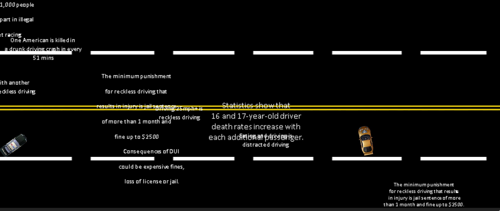
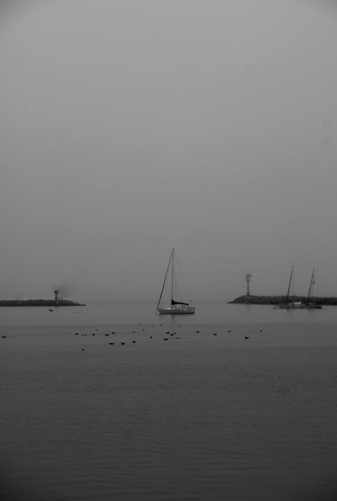
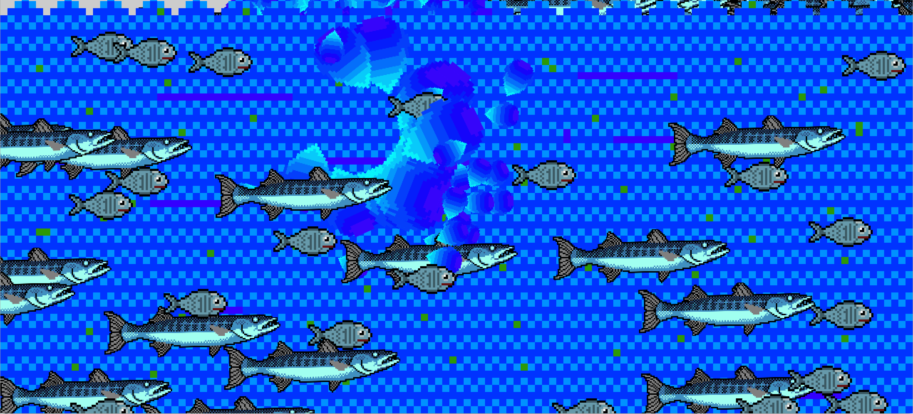
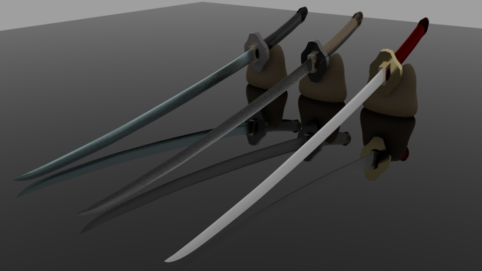

Yun Che Hsieh's Portfolio
Artist Statement
My name is Yun Che Hsieh. Life is always hard whenever I think of it. It is the same as thinking of being an artist in the future. What am I going to focus on the term of art? Am I able to have a stable income from becoming an artist? What are the obstacles during the process of becoming an artist? All these factors feared me since the first year of community college. I was focusing on learning what graphic design really is. However, the only thing I wished to know is “am I able to make money out of it?” I did not care about what art really is. Instead, I kept sharping on skill in utilizing Adobe products and accomplished some portfolio level art projects. But still, the answer I ever desired never came at me and all I had was piles of meaningless blank posters and wasted eleven times seventeen papers.
Personally, doing all those infinite printing, constantly picking on extremely small details and most importantly I could not examine the beauty behind typefaces. On my second thought, what happened if I tried to make projects I like more enjoyable for everyone to see? After a couple of years of hard work and transferred to SJSU, I learned to enjoy making art instead of thinking about making money, and not worry about projecting my work to people. Basically, trying to be optimistic rather than pessimistic.
Clock, p5 JavaScript, 2018

For this project, I wanted to try using the p5 Javascript to change the 2D shape differently through time. When every second passes, the ellipse will change position and shape, and every minute passed, the ellipse in the back will move to the top right corner and move back from the bottom left corner once more. The purpose of thi s clock is not to tell what the actual time is but to show what an artistic clock can be accomplished through coding.
Labor, Photoshop AfterEffect, 2018
Looking back at the time where people used to work in such a long period of time with the harsh condition and extreme caution to earn a small amount of income to survive a week. Compared to today's society where people among themselves have laws and other protections behind their back is rather interesting to observe. In this project, it is my first time drawing every 2D images through Photoshop. I was trying to make a video responding to the event of Chinese Labor working in the United States in the past. I was inspired by how Japan animation imports their 2D images and make them move in a video. By utilizing the assets provided by Adobe AfterEffect, I was able to bring images made from Photoshop and make them move as the Japanese animation does.
Adrenaline Racer, p5 JavaScript Photoshop, 2018
This game that I and one of my classmate named Wilson are working on is called Adrenaline Racer. By having many trials and errors on utilizing p5 Javascript, we both managed to get the game working on a website. The purpose of this game we worked on which to get the players to acknowledge the facts about drunk driving and reckless driving, so they realized the consequences of these actions. This game can be educational and fun at the same time.
The Boat, Lightroom, 2017, 1954x2902
{kind=link}
For this photo I took in the Bay Area using my D200 digital camera, I wanted to respond to today's fishing industry is dying because of global climate change. There is only one boat int he middle of the scene. The color of the sky and sea cut the overall image into half. During the process of editing the photo in Lightroom, I was able to change the color to black and white. I was also able clean up some of the dust coming from the camera using brush tool.
Return Home, MakeHuman Maya AfterEffect, 2018
Everytime I went back to my house at night, the hallway is always dark and cold. The sense of emptyness flows around where I was standing and starting to feel a chill behind my back. In this project, I was inspired by one of the horror games called "P.T." created by Hideo Kojima. I wanted to stage out the experience I had by making a video out of Maya and edited it through AfterEffect.
The Maze, Fusion 360 3D Printer, 2018
For this project, I'm building upon the idea of labyrinth from Ancient Greek mythology. By playing around with Fusion 360 while exploring new tool to utilise at the same time, this 3D object is able to be build with multiple routes in a scaled cylinder and able to 3d print the object out to life using gcode exported from Cura. User is able to choose up to four difficulties by throwing a ball into the holes of laser cut plate and control its balance and move towards the end goal of the maze.
Cat Game, Unity Photoshop, 2018
While working in a group of three, we managed to use Unity and Photoshop to create a game that tells a story while having no experience on coding C#. For this project, I worked on the coding and scene management of the game. As for the story of the game, there a lazy Cat is about to have his first date with Kiki "the Rabbit." Player has to help him to pass through his messy room to meet Kiki ouside.
Fish is Swimming, Processing, 2018
Run sketchFor this project, I wanted to simulate the fish swimming in a pool. While coding in Processing for the first time, I used algorithms that make the 2D images collide together so that they can jump automatically upon hitting each other. I also created a whirlpool using array function in Processing. Again, the overall purpose is to create a simulation about fish swimming in sea naturally.
Garamond, Illustrator, 2017
For this project, I was asked to create a booklet about a particular typeface in class. Garamond is one I found it more compelling because it made me remember when I first trying to learn English back in my home country. While having many trials and errors, I finally able to find the right position that does not disturb the overall perspective and maintain its cleanliness at the same time.
Sword, Maya, 2018
{kind=link}
For this project, I wanted to recreate a Japanese sword using Maya for the first time. I was having a hard time shaping the object into what I wanted to be because of the control is new to me. Eventually, I did what I could and added texture that is provided inside of Maya. The purpose of this project is to show a still life object that represents a culture in the past and hopefully it can be imported into Unity in the future.